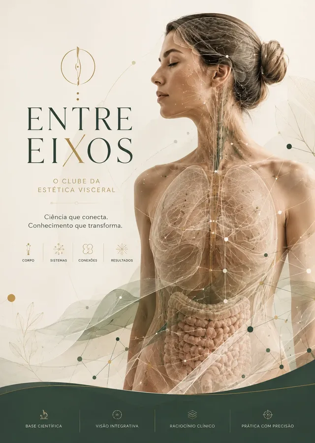
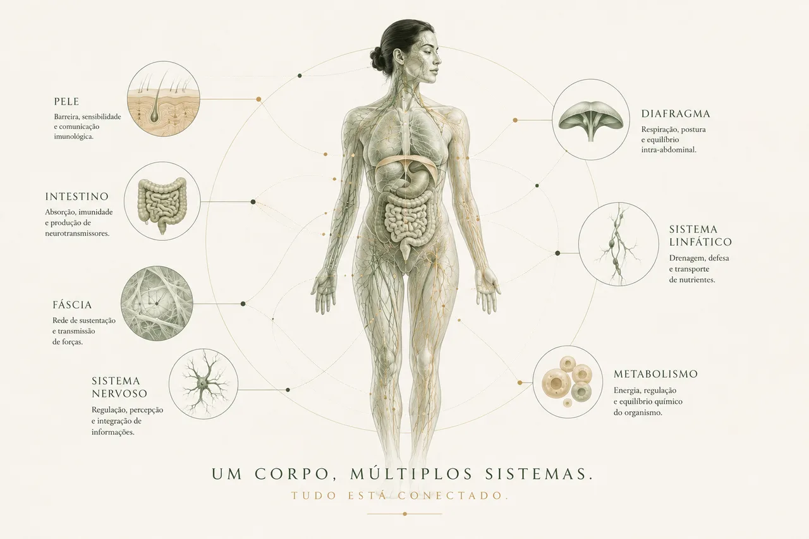
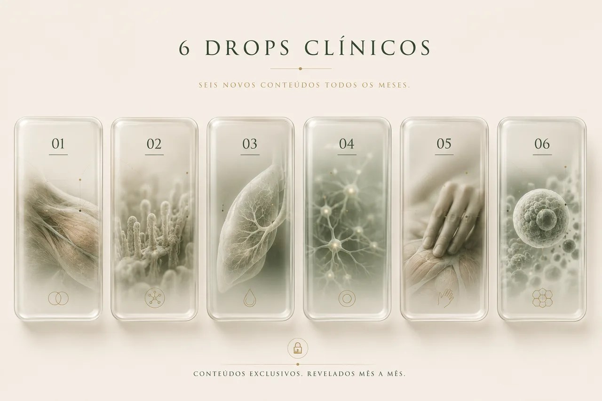
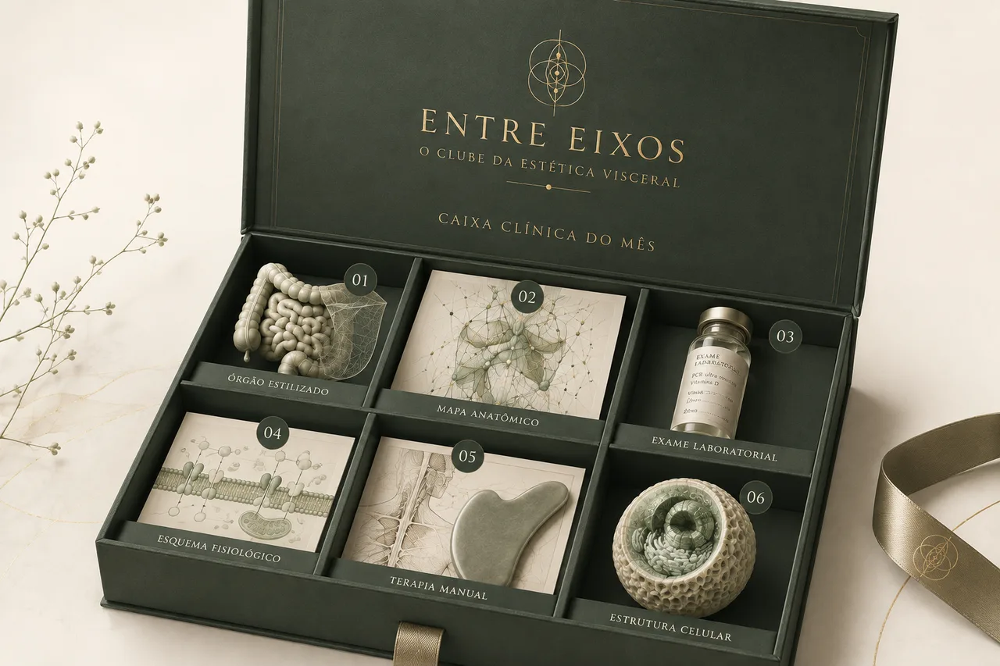
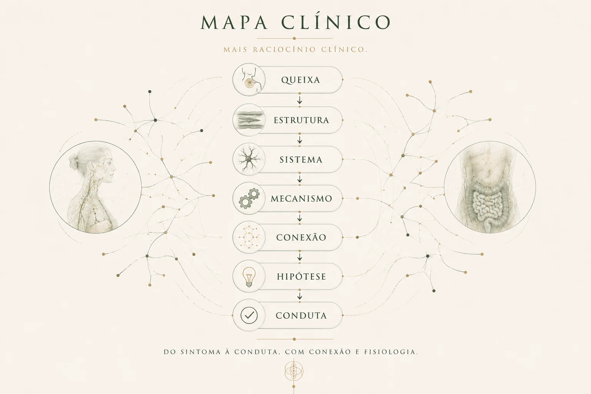
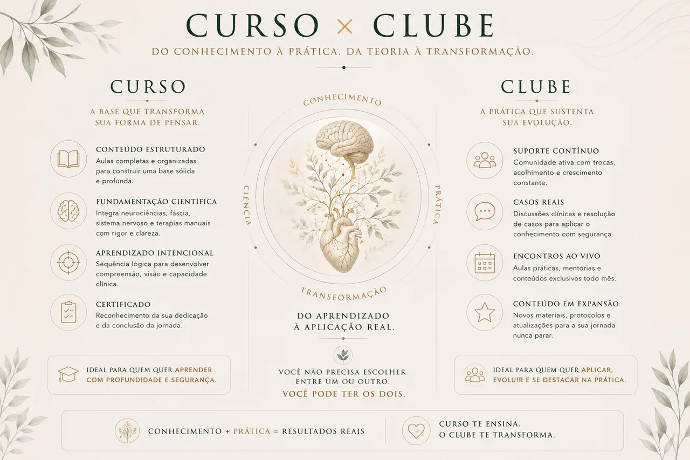

Todo mês, uma nova caixa de conhecimento clínico se abre para você. Uma assinatura mensal para quem deseja compreender o corpo além do sintoma, conectar sistemas aparentemente distantes e desenvolver um raciocínio clínico verdadeiramente fisiológico.
Acesso 100% online pela Hotmart · Novos conteúdos liberados ao longo de cada mês

Mesmo assim, grande parte dos tratamentos continua olhando apenas para o local em que o sintoma apareceu. O resultado? Protocolos repetidos, respostas temporárias e queixas que sempre retornam.

As conexões fisiológicas que explicam por que o sintoma aparece em um lugar enquanto a origem clínica está em outro.
Ver planos e valoresO Entre Eixos é um clube de assinatura mensal sobre fisiologia aplicada, estética visceral, raciocínio clínico e terapias manuais. Todos os meses, uma nova edição é aberta dentro da plataforma — e você sabe quantos conteúdos vai receber. O que você não sabe é quais temas, conexões e eixos clínicos serão revelados ao longo do mês.
É essa descoberta que transforma cada nova edição em uma experiência: uma nova estrutura. Um novo mecanismo. Uma nova conexão fisiológica. Uma nova possibilidade clínica.

Você sabe que são seis. Mas não sabe exatamente o que vai encontrar — conteúdos que nunca foram entregues em MODULE, BIOSOMA 2.0, NEUROtoque ou em qualquer outra formação da professora Bianca Mendes.
Não é mais um curso. É um novo eixo de conhecimento aberto a cada mês, diretamente na sua área de membros.
Assim que sua assinatura for confirmada, você recebe acesso à plataforma do Entre Eixos pela Hotmart.
A cada mês, uma nova caixa clínica é disponibilizada na área de membros.
Os conteúdos não precisam ser liberados de uma só vez. Cada novo material pode abrir como um “drop clínico”, mantendo a curiosidade e a experiência de descoberta durante todo o mês.
Cada conteúdo amplia sua compreensão fisiológica e transforma a maneira como você observa uma queixa, monta uma conduta ou conduz um atendimento.
Sem conteúdos repetidos. Sem uma sequência previsível. Sem saber antecipadamente qual estrutura, sistema ou eixo será revelado.
Entre os formatos que poderão aparecer, estão:
Demonstrações de técnicas manuais, avaliações, pontos de contato, vetores, profundidades e possibilidades de aplicação clínica.
Explicações profundas sobre a comunicação entre órgãos, fáscias, metabolismo, sistema nervoso, circulação, linfa, pele e estruturas musculoesqueléticas.
Compreender marcadores laboratoriais, relações fisiológicas e sinais que merecem investigação ou encaminhamento.
Estudos educacionais sobre nutrientes, deficiências e mecanismos metabólicos, respeitando a habilitação de cada profissional.
Conexões entre sinais, sintomas, estruturas, tecidos, órgãos e possíveis origens fisiológicas.
Situações clínicas construídas para você sair do protocolo automático e pensar no paciente como um sistema integrado.
Guias, mapas, esquemas, checklists e estudos dirigidos que poderão acompanhar determinadas edições.
A única certeza de cada mês. Os seis conteúdos serão sempre diferentes e surpreendentes.
Você nunca saberá exatamente o que será revelado. Mas saberá que encontrará conhecimento novo, exclusivo e aplicável.

Cada edição do Entre Eixos é um evento. Os seis conteúdos da edição são liberados em drops ao longo do mês, para que a descoberta — e a aplicação — façam parte da experiência.
Liberações-surpresa · sem repetição
Você deixa de olhar apenas para o sintoma e começa a investigar as conexões que sustentam aquela queixa.
Ao compreender melhor a fisiologia, suas escolhas deixam de ser baseadas somente em protocolos prontos.
Enquanto muitos oferecem os mesmos procedimentos, você desenvolve uma leitura clínica mais individualizada.
A autoridade não nasce de falar difícil — ela nasce da capacidade de explicar, relacionar, avaliar e conduzir cada caso com clareza.
Quando o atendimento envolve avaliação, raciocínio e estratégia, o paciente compreende melhor o valor do seu trabalho.
Possibilidades baseadas em conhecimento fisiológico, raciocínio clínico e trabalho manual — sem depender de aparelhos caros.
Essa é a diferença entre repetir uma técnica e compreender o que está acontecendo no corpo à sua frente.
Quero esse nível de raciocínio — ver valoresCada profissional deve aplicar os conteúdos de acordo com sua formação, habilitação e campo legal de atuação. O material possui finalidade educacional.
O Entre Eixos é um clube de atualização, descoberta e aprofundamento contínuo.
Um curso é uma linha. O Entre Eixos é uma rede que continua crescendo.

Por isso, o clube não substitui MODULE, BIOSOMA 2.0 ou NEUROtoque — ele amplia, complementa e conecta conhecimentos que atravessam todas essas formações.
Sou Bianca Mendes, esteticista, professora e pesquisadora da fisiologia aplicada à estética e às terapias manuais. Ao longo da minha trajetória, desenvolvi uma maneira própria de ensinar o corpo humano: não como estruturas isoladas, mas como uma rede de sistemas que se comunicam o tempo inteiro.
Entre no clube e renove sua experiência mês a mês — ou garanta três edições completas com uma condição mais vantajosa.
Valores e condições definitivas são apresentados no checkout da Hotmart.
Dúvidas sobre a assinatura? Falar no WhatsApp.
Em um mês, o eixo revelado poderá começar no intestino. No outro, na pele. Depois, poderá atravessar o sistema nervoso, a fáscia, o metabolismo, um exame laboratorial — ou uma estrutura que você nunca imaginou relacionar à queixa do seu paciente.
Não. É um clube de assinatura mensal com novos conteúdos liberados continuamente. Não existe uma formação única com começo e fim.
Serão disponibilizados seis novos conteúdos em cada edição mensal.
Não. Os conteúdos do Entre Eixos são desenvolvidos exclusivamente para o clube e não são reproduções de aulas já existentes em outras formações da professora Bianca Mendes.
A proposta é preservar a experiência de descoberta. Algumas pistas poderão ser apresentadas, mas os conteúdos serão revelados gradualmente ao longo do mês.
As edições não têm composição rígida, mas a única certeza é que todos os meses há prática — com possibilidade de conteúdos teóricos, mapas, exames, suplementação e estudos de caso. Os seis conteúdos de cada mês serão diferentes e surpreendentes.
O clube foi desenvolvido principalmente para profissionais e estudantes das áreas da saúde e da estética. Pessoas interessadas em compreender melhor a fisiologia também podem estudar, entendendo que o material tem finalidade educacional e não substitui atendimento individualizado.
Cada membro deve respeitar sua formação, habilitação profissional e legislação aplicável à sua área de atuação.
Não. Os cursos oferecem formações estruturadas e aprofundadas em suas metodologias. O Entre Eixos funciona como um ecossistema de atualização e conexão contínua.
O acesso é feito pela plataforma Hotmart após a confirmação da assinatura. O período de acesso, as regras de renovação e as condições após um eventual cancelamento seguem exatamente o que está informado no checkout da Hotmart.
Você pode continuar repetindo os mesmos protocolos e procurando respostas apenas no local do sintoma. Ou pode começar a enxergar o corpo como ele realmente funciona: uma rede viva de estruturas, sistemas e mecanismos que se influenciam continuamente. A próxima caixa já está sendo preparada.
Acesso 100% online pela Hotmart · Liberações ao longo de cada mês